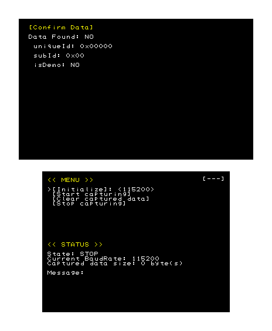
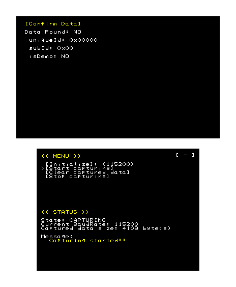
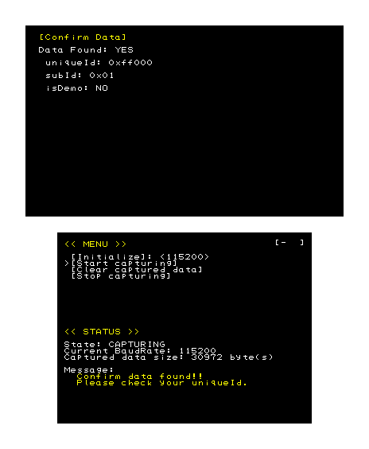

IrCommunicatorChecker is a tool for checking the communication ID (unique ID and demo flag) and communication mode ID used for infrared communication between Nintendo CTR systems.
When the software starts, the following screen appears.

The upper screen displays the results if the communication ID was successfully acquired.
| Item | Description |
|---|---|
Data Found | Indicates whether the communication ID was confirmed. |
uniqueId | The unique ID from which the communication ID was generated. |
subId | Communication mode ID. |
isDemo | The demo flag of the communication ID. |
| Item | Description |
|---|---|
Initialize | Use the Left and Right Keys to select a baud rate, then click the A Button to initialize the tool at the selected baud rate. |
Start capturing | Starts monitoring communication. |
Clear captured data | Clears captured data. |
Stop capturing | Stops monitoring communication. |
| Item | Description |
|---|---|
State | Indicates whether the tool has stopped monitoring (STOP) or is still monitoring (CAPTURING). |
Current BaudRate | Indicates the baud rate currently configured for the tool. |
Captured data size | Indicates the total size of all received data while communication has been monitored. |
Message | Displays notifications for the user in response to user operations or changes in the state of the tool. |
Select Initialize to initialize the tool. Use the Left and Right keys to select the baud rate used by the application performing communication between the systems. Next, press the A Button to initialize the tool at the selected baud rate.
Select Start capturing and press the A Button to monitor an application's communication between systems. The tool will stand by for data until End capturing is selected or a communication error occurs. Subsequently, it obtains the communication ID by the following procedure.

When CTR-T receives data transmitted by a procedure that confirms the communication ID used for communication between the systems (the RequireToConfirmId or WaitToConfirmId function), it extracts the communication ID (unique ID and demo flag) and communication mode ID from the received data.
When CTR-T obtains the communication ID, it displays the results on the upper screen. Confirm that each item is configured as you intend. If CTR-T is not able to obtain the communication ID, disconnect the two communicating CTR systems and try again.

CONFIDENTIAL